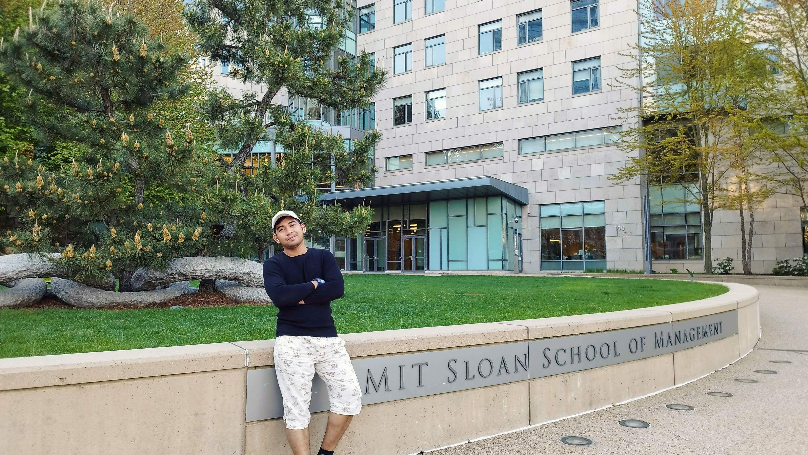

Muhammad Sukri Bin Ramli is the Lead Researcher at the Sukri Ramli Research Lab (SRRL).
He is a recipient of the 2026 World Customs Organization (WCO) Certificate of Merit for his international contributions to trade innovation. His work specializes in System Dynamics Modeling, Unsupervised Machine Learning, and Pattern Recognition within global trade and environmental data systems.
Click on any title to view the original PDF document.